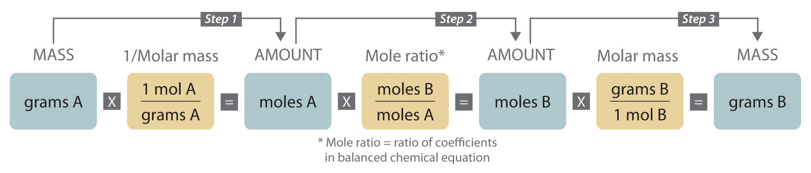
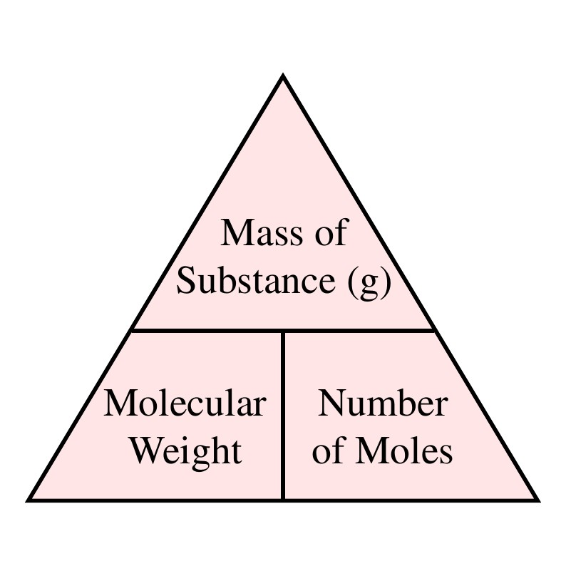
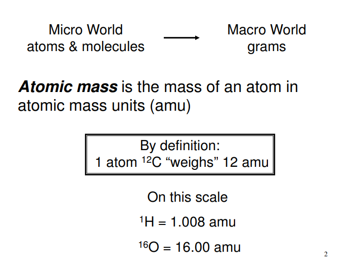
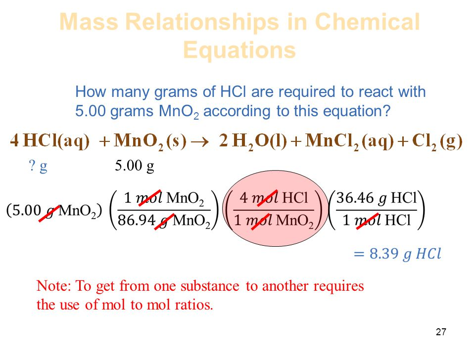

Mass Relationship
Mass Relationships in Chemical Reactions : Stoichiometry
Stoichiometry in chemistry is the study of quantitative relationships between
reactants and products in a chemical reaction. It enables the prediction of product quantities based
on reactant amounts, identifies limiting reactants, and evaluates reaction yields. Key components
include:
• Balanced Equations: Stoichiometry begins with balanced chemical equations, ensuring mass
conservation.
• Molar Ratios: Coefficients in balanced equations represent reactant-product ratios crucial for
calculations.
• Molar Mass: Molar mass (g/mol) is the mass of one mole of a substance, essential for stoichiometric
calculations.
• Limiting Reactant: Identifies the reactant consumed completely, limiting the product's formation.
• Theoretical and Actual Yield: Theoretical yield (based on stoichiometry) and actual yield (observed)
differ due to factors like impurities.
• Percent Yield: Measures the reaction's efficiency, calculated by (actual yield / theoretical yield)
* 100%.
• Stoichiometric Calculations: Involves finding mass, volume, or moles of substances in reactions.

Example: Combustion of Methane (CH₄) with Oxygen (O₂) to Form Carbon Dioxide (CO₂) and Water (H₂O)
Balanced Equation:
CH₄ + 2O₂ → CO₂ + 2H₂O
If you have 16 grams of CH₄ (methane), you can use stoichiometry to find out:
How many moles of CH₄ you have.
How many moles of O₂ are required.
How many moles of CO₂ and H₂O will be produced.
The total mass of CO₂ and H₂O produced.
The limiting reactant (if you have limited amounts of CH₄ and O₂).
Stoichiometry is a crucial tool in analytical chemistry, as it allows chemists to design and optimize
reactions, predict outcomes, and assess the efficiency of chemical processes. It plays a central role
in many aspects of chemistry, including quantitative analysis and industrial production.

What is Mass Relationship?
A mass relation refers to the ratio of the mass of reactants and products to each other. In a balanced chemical equation, you can use the mole ratio to solve for mass in grams. You can use an equation to learn how to find the mass of a compound, provided you know the quantity of any participant in the reaction.

EXAMPLE 11 : Sodium, Na (only natural isotope), At. Wt = 22.9898
So the mass of 1 atom of Na is 22.9898 amu.
• Notice that the atomic mass of the element is very close to its
mass number....
• For elements that naturally contain more than one isotope, we can
determine an average atomic mass; an average of the isotopic
masses weighted according to their fractional relative natural
abundances.
• This average is numerically the same as atomic weight....

Mass and Moles of a Substance
Chemistry requires a method for determining the numbers of molecules in a given mass of a substance which has lead to the development of the mole (quantity of substance to be discussed later). This allows the chemist to carry out “recipes” for compounds based on the relative numbers of atoms involved. stoichiometry - the calculation involving the quantities of reactants and products in a chemical equation. 2